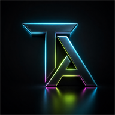

TraceReady
Farm CSV, KML, and GeoJSON cleanup for coffee and cocoa traceability handoffs, with browser-side checks and paid cleanup handoff.

Teddy AlstonProject Catalog | GitHub + Local Inventory
A public-safe catalog of projects that have touched this machine or the imperator-clawdius GitHub account, plus live commerce surfaces, prioritized by portfolio signal, recency, originality, and commercial usefulness.
Tier 1
Farm CSV, KML, and GeoJSON cleanup for coffee and cocoa traceability handoffs, with browser-side checks and paid cleanup handoff.
MIT-licensed service cockpit for shaping small-service offers, generating launch assets, and tracking early leads.
GitHub Pages CV site and profile README that organize the public proof-of-work layer.
Public marketing surface for Pocket Dungeon while the app backend, prompts, Android work, and provider routing stay private.
Tier 2
AI web intelligence and scraping platform. Backend, website, and production repos are treated as merged or superseded evidence.
SwiftUI Screen Time enforcement app with shields, geofence/selfie release flows, safeword override, audit logging, and App Store readiness work.
Android AI tabletop RPG companion with private app source, content pipeline, LLM gateway, and public website boundary.
Local-business intake, call handling, booking, client knowledge, and receptionist automation workspace.
Etsy storefront and print-on-demand commerce case study covering brand operations, marketplace positioning, listing workflows, and public-safe growth loops.
Windows focus-lock private beta with hosts-file blocking, license activation, emergency override, and tamper-evident audit receipts.
Local-first receivables desk for invoice status, risk scoring, reminder drafts, exports, imports, backups, and payment follow-up.
Installable PWA and API prototype for educator-first work, verified student help requests, forums, and a local verification cockpit.
Expo, React Native, Next.js, Supabase, shared TypeScript, and design-system monorepo for mobile and web surfaces.
Wildfire and severe-weather intelligence prototype with review-only AI memos, authority gates, contractor demo flows, and PWA direction.
Private Android/WebView game rebuild with signed APK/AAB artifacts, launch assets, and verification notes.
Onshape CAD automation, FeatureScript, vision decomposition, parametric iteration, and structured mutation feedback.
Agentic vendor onboarding and third-party risk workflow with intake, OSINT evidence, commercial analysis, and decision packets.
Tier 3
Diagnostic audit intake, automation scoring, quick wins, implementation roadmap, and proposal tiers.
Lead capture, urgency scoring, personalized follow-up drafting, webhook notification, and MVP lead log.
Turns source content into LinkedIn, X, Threads, Instagram, newsletter, and short-video drafts with review-in-loop positioning.
Trend intake, hook generation, script drafting, idea scoring, and lightweight short-form publishing queue.
Applicant qualification, segmentation, onboarding messages, suggested cohorts, and webhook notifications.
Tier 4
Multi-agent coordination, bot relay, agent registry/control-plane work, remediation packages, dashboards, and operating-memory workflows.
AI memory, retrieval, local search, and read-only web/API surfaces for browsing structured memory stores.
Agent runtime, Android, sandboxing, gateway, and upstream agent research. These are not homepage lead signals.
Prediction-market data retrieval, processing, CLI, and large analysis-ready data workspace.
Job-search command center research, CV generation, role scoring, portal scanning, and revenue automation research notes.
Tier 5
Useful research and reference repos. They should not be pinned or described as original lead portfolio work without a clear contribution note.
Superseded or merged repositories. Keep for history until deployment references are fully retired.
Private consolidated SaaS experiments, launch staging, and local-only workspaces. Useful internally, not public proof by default.
Private firmware/security research and safety-sensitive experiments stay out of public positioning unless separately reviewed, cleaned, and approved.